Shared random raters: feedback and replacement raters
Source:vignettes/mfrmr-random-raters.Rmd
mfrmr-random-raters.RmdAn assessment coordinator wants feedback for the raters who marked this year’s performances and wants to understand what could happen when other raters are recruited. These are different questions. A fixed-rater MFRM describes the particular raters. A random-rater model additionally assumes that these raters are draws from a specified population. That assumption needs a substantive justification: a hand-picked panel is not automatically representative.
The same issue arises for music juries, clinical performance assessments and sports judges. Changing the names of the columns is straightforward; deciding whether the population, assignment and scoring assumptions fit the setting is essential. This workflow currently uses an adjacent-category rating scale model (RSM), unit weights and additive fixed facets.
The crossed-effects rationale is related to Van den Noortgate, De Boeck and Meulders (2003). Their binary model shares each random effect across all responses involving that unit. Huang and Cai (2024) model crossed effects for item-level ordinal ratings with a graded-response model. These papers explain why sharing matters; they do not establish equivalence to this RSM or validate its numerical approximation and intervals.
Fit the shared-rater model
Install the optional RTMB package (version 2.0 or later)
to fit this model and to score responses and compute profile intervals.
Saved summaries, plots and point predictions do not require a live
optimizer. The examples below run when RTMB is available.
ratings <- load_mfrmr_data("example_core")
random_fit <- fit_mfrm_random_rater(
ratings, person = "Person", rater = "Rater", score = "Score",
facets = "Criterion", score_levels = 1:4, quad_points = 121
)
random_fit$checks
#> OptimizerCode MaxGradient ZeroVarianceScore EstimatedVarianceBoundary
#> 1 0 6.771424e-10 1463.155 FALSE
#> HigherOrderZeroVarianceScore EstimatedPersonVarianceBoundary
#> 1 1463.155 FALSE
#> PersonVarianceUpperBoundary PersonZeroVarianceScore PersonZeroScoreDifference
#> 1 FALSE 1954.208 0.001859894
#> HigherOrderPersonZeroVarianceScore HigherOrderPersonZeroScoreDifference
#> 1 1954.208 0.001859869
#> QuadraturePoints CheckPoints LogLikDifference GradientDifference
#> 1 121 243 5.894435e-09 1.949821e-07
#> PersonQuadratureStable NumericalReady InformationPositive
#> 1 TRUE TRUE TRUE
summary(random_fit)$data_usage
#> Input Analyzed Omitted
#> 768 768 0These demonstration data contain 48 persons, four raters and four criteria. Four raters can illustrate the calculations, but provide little information about an entire rater population. Adding ratings from the same four raters does not create more independent draws from that population.
Each person has one latent ability, and each rater has one severity effect shared across all persons rated by that rater. Drawing a fresh rater effect for every person would describe a different dependence structure. Abilities are independent normal with mean zero and estimated SD; severities are independent normal with mean zero and estimated SD, independent of abilities and assignment. Fixed-facet level effects sum to zero. Steps are unconstrained adjacent thresholds, and their mean determines overall location. The observed raters’ severities are not forced to sum to zero.
The default person_sd = NULL estimates the ability
population’s SD. It is reported separately from rater population
variation:
random_fit$calibration[c("person_sd", "person_variance", "rater_sd")]
#> $person_sd
#> [1] 0.9686796
#>
#> $person_variance
#> [1] 0.9383402
#>
#> $rater_sd
#> [1] 0.2540321Set person_sd = 1 to impose a known standard normal
population, or supply another positive known SD. With the Rasch slope
fixed at one, fixing ability variance is a substantive restriction: a
population twice as dispersed cannot be represented simply by relabeling
the same fitted scale. The mean remains zero; the step location is free.
Estimating a common SD does not accommodate different ability
populations across panels. Connecting such panels with a few common
persons does not establish a homogeneous population or ignorable
assignment. Earlier saved fits retain their original known standard
normal population.
Fixed-facet and step calibration tables retain estimates and approximate SEs, but bounds are omitted by default. To inspect a pointwise normal approximation explicitly, use:
confint(random_fit, parm = "calibration", level = .95)
#> Lower Upper
#> Fixed facet: Criterion: Accuracy 0.07045120 0.3925020
#> Fixed facet: Criterion: Content -0.55085678 -0.2218977
#> Fixed facet: Criterion: Language -0.06886419 0.2501110
#> Fixed facet: Criterion: Organization -0.09507547 0.2236300
#> Step: Score: 2 -1.65361416 -0.7503841
#> Step: Score: 3 -0.47088328 0.3643408
#> Step: Score: 4 0.81327554 1.7160425
#> attr(,"level")
#> [1] 0.95
#> attr(,"method")
#> [1] "Observed-information normal approximation"
#> attr(,"target")
#> [1] "Fixed-facet and step calibration parameters"
#> attr(,"note")
#> [1] "Pointwise approximation only; nominal coverage is not established. Missing bounds retain numerical, information, boundary or SE restrictions. No variance, Person-difference or rater-quality inference."
summary(random_fit, calibration_intervals = "normal", level = .95)$calibration
#> Parameter Facet Level Estimate SE Upper
#> 1 Fixed facet Criterion Accuracy 0.23147658 0.08215732 0.3925020
#> 2 Fixed facet Criterion Content -0.38637724 0.08391968 -0.2218977
#> 3 Fixed facet Criterion Language 0.09062342 0.08137273 0.2501110
#> 4 Fixed facet Criterion Organization 0.06427724 0.08130390 0.2236300
#> 5 Step Score 2 -1.20199914 0.23042006 -0.7503841
#> 6 Step Score 3 -0.05327124 0.21307128 0.3643408
#> 7 Step Score 4 1.26465904 0.23030194 1.7160425
#> 8 Population SD Rater Rater population 0.25403208 0.10660944 NA
#> 9 Population SD Person Person population 0.96867961 0.12319501 NA
#> Lower
#> 1 0.07045120
#> 2 -0.55085678
#> 3 -0.06886419
#> 4 -0.09507547
#> 5 -1.65361416
#> 6 -0.47088328
#> 7 0.81327554
#> 8 NA
#> 9 NAThis does not request intervals for the observed raters or population
SDs. Finite-sample coverage is not established. For tables, reports and
exports, use
mfrm_results(random_fit, calibration_intervals = "normal", calibration_level = .95).
Rebuilding output from an older saved fit applies the new default
without refitting; older result bundles keep their stored tables.
Both estimated zero variances are checked explicitly. At either
estimated boundary, regular calibration and rater intervals are
unavailable. An estimated ability variance at the upper search bound
also prevents numerical readiness; inspect
PersonVarianceUpperBoundary, increase
person_variance_max and refit before interpretation. The
default bound of 16 is a search limit, not evidence that larger
population variances are impossible.
The fit uses frequentist approximate marginal maximum likelihood, with no priors on calibration or variance parameters. Person effects are integrated with quadrature conditional on the shared raters; a Laplace approximation integrates the joint rater vector. Kristensen et al. (2016) describe the automatic differentiation and Laplace framework.
NumericalReady compares the chosen Person quadrature
with a higher order and checks optimization. This example uses 121
points because lower orders were insufficient for its response vectors.
Up to 241 points can be requested; no order is universally adequate,
especially when ability variance is large.
InformationPositive additionally checks usable local
curvature. A separated facet can have a tiny gradient as its coefficient
diverges; that does not make it a finite, identified solution. Failed
numerical or information checks block prediction and profiling, and
withhold regular intervals. These checks do not test
the separate rater Laplace approximation, establish model fit, or
guarantee interval coverage. If a check fails, inspect it and resolve
the numerical issue before prediction or profiling.
For a failed PersonQuadratureStable check, refit the
same data with a larger quad_points. For example, after an
insufficient 61-point fit, keep that fit and try 121 points with the
same model and population settings:
refined <- fit_mfrm_random_rater(
ratings, "Person", "Rater", "Score", facets = "Criterion",
score_levels = 1:4, person_sd = NULL, quad_points = 121
)
refined$checksMatch the arguments to your original fit: changing a known
person_sd to NULL, for example, changes the
model as well as the computation. The LogLikDifference and
GradientDifference compare integration orders at the fitted
calibration; the higher-order check alone does not reestimate the
parameters. A successful refit must pass optimization, integration and
information checks, while an estimated zero variance retains its own
interval restrictions. If 241 points still fail, the computation remains
unresolved. Do not change the recorded checks to obtain intervals from
the earlier fit.
How accurate is the calibration likelihood near the estimate?
The fit uses Person quadrature and a shared-rater Laplace approximation. Increasing the Person quadrature order checks one numerical integration; it does not measure the error of the separate rater approximation. An independent comparison reused eight three-category datasets with 240 Persons, six or 24 raters, and rotating pairs or weakly linked panels. It moved all six calibration coordinates, a criterion contrast and the two population SDs along directions scaled to one local information unit. Calibration was held at each planned point; no alternative model was fitted.
All 144 planned likelihood-change comparisons met the stated tolerance of 0.05 log-likelihood units, including Monte Carlo uncertainty. They contain 128 distinct parameter points: the named criterion-contrast direction repeats one basis direction. The largest absolute difference from the refined reference was 0.005 log-likelihood units; the largest error allowance was 0.0071. These are numerical tolerances, not logits or assessment cutoffs.
The initial importance-sampling reference left 61 comparisons unresolved because of reference precision or its uncertainty allowance. A second, predeclared calculation transformed the same saved joint posterior draws and included the exact change-of-variables determinant. This reduced reference noise without changing the target integral, parameter points, package likelihood or tolerance. It was applied to all points, and the initial results remain recorded. It was not a new sampling run or an independent replication.
This supports the tested local likelihood changes. It does not establish an exact maximum-likelihood solution, absolute likelihood normalization, accuracy along an entire refitted SD profile, or behavior at a zero-variance boundary. It also does not establish interval coverage. Fixed-facet and step intervals remain observed-information normal approximations; the rater-SD profile and conditional Person intervals have the separate meanings below.
Give feedback about the observed raters
random_fit$raters
#> Rater Persons Estimate ConditionalSD PredictionSE Lower Upper
#> 1 R01 48 -0.1603837 0.1228652 0.1492869 NA NA
#> 2 R02 48 -0.2692241 0.1230289 0.1514162 NA NA
#> 3 R03 48 0.1566219 0.1228255 0.1492175 NA NA
#> 4 R04 48 0.2730199 0.1229747 0.1514766 NA NA
plot(random_fit)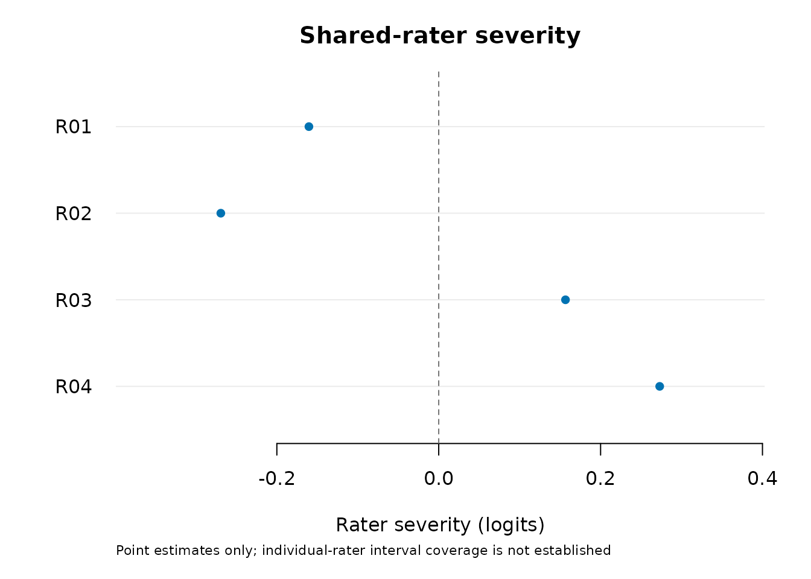
Positive severity means stricter ratings relative to the assumed
rater population mean. Points are conditional modes, with shrinkage
toward that mean. ConditionalSD describes uncertainty
holding calibration fixed. PredictionSE additionally
incorporates first-order calibration uncertainty. The full
rater_covariance retains dependence between raters. Neither
number establishes the coverage of an interval.
Individual-rater Lower and Upper are
missing by default, and the default plot shows points only. Nominal
interval coverage has not been established. If an approximate interval
is useful for investigating the calculation, request it explicitly from
the saved fit:
normal_approximation <- confint(random_fit, parm = "raters")
normal_approximation
#> Lower Upper
#> R01 -0.45298058 0.13221318
#> R02 -0.56599448 0.02754621
#> R03 -0.13583891 0.44908276
#> R04 -0.02386874 0.56990849
#> attr(,"level")
#> [1] 0.95
#> attr(,"method")
#> [1] "First-order normal prediction approximation"
#> attr(,"target")
#> [1] "Realized uncentered rater effects relative to the population mean"
#> attr(,"note")
#> [1] "Nominal coverage is not established. Explicit approximation only; not a rater-quality classification or a rater-difference interval."
# Optional display: plot(random_fit, intervals = "normal")These are first-order normal prediction intervals for the
realized random rater effects, not confidence intervals
for fixed-rater coefficients. Their coverage can be poor with few
raters, sparse panels, an inaccurate approximation or a wrong population
model. They do not classify rater quality. Discuss specific ratings and
rubric interpretation before considering any intervention; severity
alone does not establish inconsistency, bias against a group or a need
to exclude a rater. Existing diagnose_mfrm() and
fixed-facet interval helpers do not accept this distinct model
class.
Choose a view and adapt its presentation
For feedback, start with severity points and concrete examples of ratings. The explicitly selected normal approximation can be inspected in a precision view; its vertical axis is the approximate interval width, not validated precision, Infit, reliability or a quality score. The cumulative distribution summarizes the observed point estimates. Shrinkage and which raters were included affect that distribution, so it is not an estimate of the latent rater population. Four raters make a small descriptive example.
plot(random_fit, style = "precision", intervals = "normal", point_size = 3,
title = "Rater severity and approximate interval width")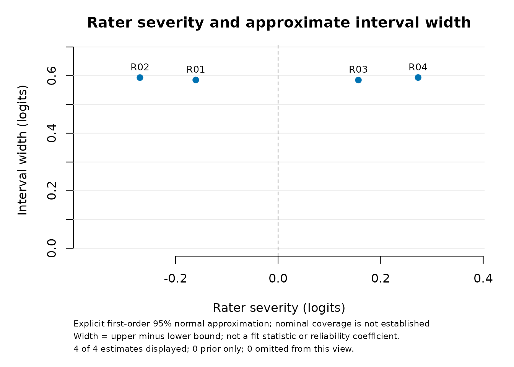
plot(random_fit, style = "distribution", reference = NULL,
title = "Distribution of the observed rater estimates")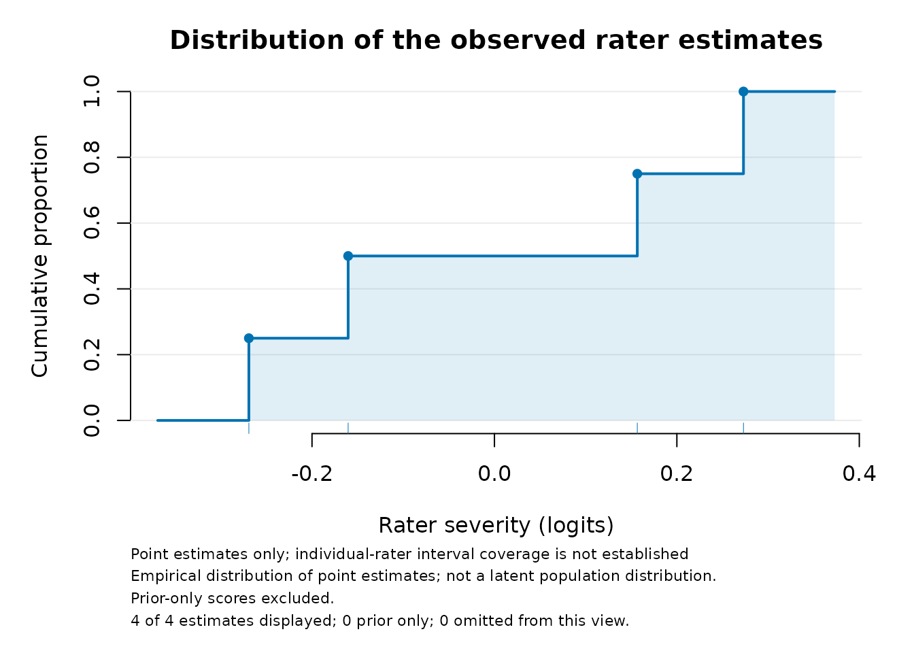
The same views work for saved Person scores and testlet fixed-facet
estimates. sort = "estimate" or
sort = "uncertainty" reorders an interval plot without
altering the source table. For rater fits, sorting by interval width
also requires intervals = "normal". It does not test
differences between rows. palette = "mono" supports
black-and-white reproduction. Open and filled symbols distinguish
prior-only and response-based scores, independently of colour.
Prior-only scores are omitted from cumulative distributions. Precision
views omit rows without finite intervals. Every omitted row and reason
remains in plot_data(figure)$display_data; the complete
source is in $table.
For a publication with its own caption, suppress the built-in text:
figure <- plot(random_fit, draw = FALSE, sort = "estimate", palette = "mono",
show_title = FALSE, show_notes = FALSE, text_scale = 1.15)
if (requireNamespace("ggplot2", quietly = TRUE)) print(as_ggplot(figure))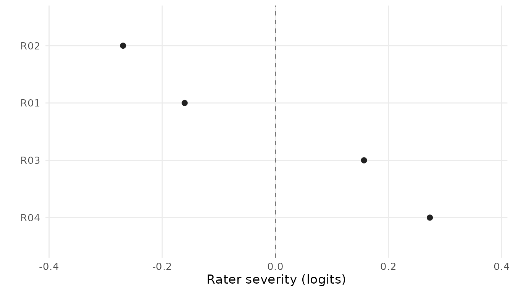
# Text alternatives and the full table can accompany the exported image:
plot_data(figure)$alt_text
#> [1] "Shared-rater severity (interval view). 4 of 4 estimates displayed; 0 prior only; 0 omitted from this view. Point estimates only; individual-rater interval coverage is not established "
plot_data(figure)$table
#> Rater Persons Estimate ConditionalSD PredictionSE Lower Upper
#> 1 R01 48 -0.1603837 0.1228652 0.1492869 NA NA
#> 2 R02 48 -0.2692241 0.1230289 0.1514162 NA NA
#> 3 R03 48 0.1566219 0.1228255 0.1492175 NA NA
#> 4 R04 48 0.2730199 0.1229747 0.1514766 NA NAtitle and caption accept replacement text;
"" removes it. show_labels = FALSE removes
individual IDs in interval and precision views, which can help with
crowded figures. reference = NULL removes the vertical
reference line; text_scale and point_size
adjust size. The reference is an orientation aid, not a decision
threshold. Interpretation notes remain available even when hidden.
Explain the interval target in your figure caption or surrounding
text.
as_ggplot() preserves these choices and adds an
alternative description via labs(alt = ...); use standard
ggplot2::labs() and theme() for axis labels,
fonts and further layout changes. Supply a textual description and table
when publishing an image: the image file alone does not expose its
stored metadata to a screen reader. Bootstrap interval comparisons also
support the display controls and ggplot conversion, retaining dashed
ordinary intervals and arrows for unbounded bootstrap endpoints. They
keep the interval view.
Compare the same observed panel with fixed raters
The practical question is how changing rater treatment changes the
fitted severity summaries for the same ratings. Fit the
ordinary reference with the same common normal population assumption.
population_formula = ~1 estimates its ability SD; the
ordinary RSM default instead fixes N(0,1).
ordinary_fit <- fit_mfrm(
ratings, person = "Person", facets = c("Rater", "Criterion"), score = "Score",
model = "RSM", method = "MML", rating_min = 1, rating_max = 4,
keep_original = TRUE, population_formula = ~1,
person_data = unique(ratings["Person"]), quad_points = 121
)
model_comparison <- compare_mfrm(
ordinary_fit, random_fit, labels = c("Fixed raters", "Shared random raters")
)
model_comparison$checks
#> Check Status
#> 1 Observed rating events matched
#> 2 Categories matched
#> 3 Assigned-score omissions matched
#> 4 Facet specification matched
#> 5 Ability population matched
#> 6 Unit and orientation matched
#> 7 Numerical checks passed
#> 8 Descriptive source checks passed
#> Detail
#> 1 Identical multiset; repeated events retain their multiplicity.
#> 2 Identical ordered consecutive categories and adjacent logits.
#> 3 Neither fit omitted assigned rows.
#> 4 Same other fixed facets; observed raters change from fixed effects to shared random effects.
#> 5 Both estimate one common normal SD; raw population locations use different identification conventions.
#> 6 Unit Rasch slope; positive facet effects mean greater severity/difficulty.
#> 7 Descriptive readiness only; does not establish adequacy or interval coverage.
#> 8 Blocked source readiness withholds differences; parameter exclusions remain in the effects table.
model_comparison$models
#> Label Model Input Observed Omitted Persons
#> 1 Fixed raters Ordinary fixed-facet RSM 768 768 0 48
#> 2 Shared random raters Shared-rater RSM 768 768 0 48
#> AbilityMeanSource AbilitySD AbilitySDModel LogLik
#> 1 -0.003130374 0.9683803 Estimated common normal SD -899.9969
#> 2 0.000000000 0.9686796 Estimated common normal SD -905.1894
#> NumericalReady DescriptiveSourceAvailable
#> 1 TRUE TRUE
#> 2 TRUE TRUE
#> InferenceReadiness
#> 1 review
#> 2 Target-specific; general qualification incomplete
#> Location
#> 1 Estimated population intercept; centered steps
#> 2 Mean-zero population; free step location
#> Integration
#> 1 MML fixed
#> 2 MML: Person quadrature and shared-rater Laplace
subset(model_comparison$effects, Facet == "Rater")
#> Facet Level SourceReference SourceComparison CenterReference CenterComparison
#> 5 Rater R01 -0.1829209 -0.1603837 6.938894e-18 8.491322e-06
#> 6 Rater R02 -0.3073556 -0.2692241 6.938894e-18 8.491322e-06
#> 7 Rater R03 0.1786365 0.1566219 6.938894e-18 8.491322e-06
#> 8 Rater R04 0.3116400 0.2730199 6.938894e-18 8.491322e-06
#> Reference Comparison Mean Difference ReferenceKind
#> 5 -0.1829209 -0.1603922 -0.1716566 0.02252873 Fixed facet estimate
#> 6 -0.3073556 -0.2692326 -0.2882941 0.03812293 Fixed facet estimate
#> 7 0.1786365 0.1566134 0.1676250 -0.02202307 Fixed facet estimate
#> 8 0.3116400 0.2730114 0.2923257 -0.03862859 Fixed facet estimate
#> ComparisonKind Status Reason
#> 5 Conditional rater mode available_descriptive
#> 6 Conditional rater mode available_descriptive
#> 7 Conditional rater mode available_descriptive
#> 8 Conditional rater mode available_descriptive
plot(model_comparison, facet = "Rater", style = "paired")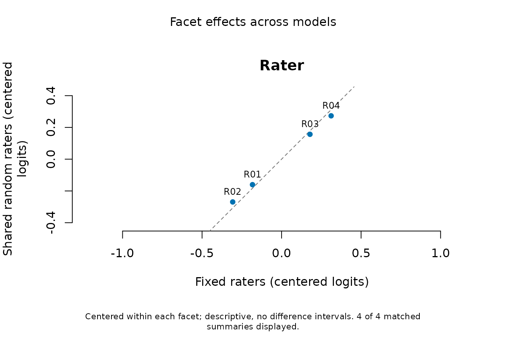
Each model’s rater estimates are centered at the unweighted mean over
the same observed panel. This preserves pairwise rater contrasts while
removing arbitrary origins. The raw values and subtracted centers remain
in the table. Difference is the second model minus the
first. Random-rater points are conditional modes, whereas the ordinary
points are fixed-effect estimates: shrinkage toward the center does not
establish greater accuracy or justify excluding a rater. The ordinary
model’s wider inferential-readiness status is also retained, even when
descriptive numerical checks pass.
Use style = "difference" for differences against their
means, or as_ggplot(plot(model_comparison, draw = FALSE))
for custom styling. The comparison uses saved fits and does not refit,
score or resample. It provides no intervals for model differences,
AIC/BIC preference or ordinary chi-squared variance-component test.
Person scores, replacement-rater predictions and predictive fit
statistics require separately aligned targets and are not compared by
this facet table.
Checks include repeated-event multiplicity, categories, unit weights,
fixed facets, population assumptions and omitted-score identities. New
ordinary fits save excluded events in prep$omitted_data. An
older fit with omissions but no such provenance must be refitted from
the complete assigned roster; matching row counts alone are
insufficient. The comparison supports missing assigned scores, not
missing IDs or excluded weights. Unsupported constraints or mismatched
data are refused even with warn_constraints = FALSE.
What the bounded validation shows
With estimated ability SD, a prespecified study used 240 Persons, three criteria and two raters per Person (1,440 responses), with 200 independent datasets per condition. Abilities were N(0,1.3²), rater effects N(0,0.7²), and scores 0–2. Rotating adjacent pairs were compared with two half-panels joined by only two bridging Persons. Per-rater workload was held equal within each rater count. Both models estimated ability variance; the shared-rater fit used 61-point Person quadrature with its higher-order check.
| Raters | Assignment | Finite intervals / planned | Conditional coverage | 95% Monte Carlo interval |
|---|---|---|---|---|
| 6 | Rotating | 198/200 | 91.58% | 88.77–94.39% |
| 6 | Weakly linked | 198/200 | 91.84% | 88.99–94.68% |
| 24 | Rotating | 176/200 | 94.06% | 93.18–94.94% |
| 24 | Weakly linked | 174/200 | 93.99% | 93.08–94.90% |
Coverage targets realized uncentered rater effects. It is first averaged within each dataset; the dataset is the independent Monte Carlo unit. These Monte Carlo intervals describe simulation precision, not an interval for one assessment. Missing intervals are excluded only from conditional coverage, and remain in the planned availability denominator. The proportion both available and covering was 90.67%, 90.92%, 82.77% and 81.77%, respectively.
All optimizers converged and information checks passed. Higher-order Person quadrature checks failed in 2, 1, 24 and 26 datasets in the table’s order; one additional six-rater weak-design fit estimated zero rater variance. No failed result was replaced. These checks do not assess rater Laplace error.
No condition met the combined qualification criterion. The study required the lower 95% Monte Carlo coverage bound to be at least 92.5%, the coverage estimate no greater than 97.5%, and the lower exact availability bound to be at least 95%. Six-rater uncertainty was also too wide to conclude coverage below the prespecified 92.5% material-undercoverage floor. The correct decision is inconclusive, not proof of equivalence or a new definitive failure. Increasing replication after seeing these outcomes was not part of the plan.
On the same available datasets, shared-rater point estimates had lower sample-centered rater MSE than ordinary MFRM with 24 raters (about .075 versus .094 for rotating pairs and .077 versus .097 for weak linking). Six-rater MSE differences were inconclusive. This comparison uses a different target from the uncentered intervals and does not establish overall model superiority. Six-rater mean population-SD estimates were about .622 instead of .7; the Monte Carlo bias intervals crossed the prespecified 10% tolerance. The study does not isolate the causes of these results.
Consequently, automatic individual-rater normal intervals are
withdrawn. confint(fit, parm = "raters") and
plot(fit, intervals = "normal") preserve explicit access to
the approximation; neither corrects it. New summaries, plots and reports
of earlier saved fits follow this default, without changing the saved
object or refitting. Raw older objects and already saved plot data
retain their historical values. Bootstrap intervals are not promoted as
a validated replacement. Numerical integration, retained uncertainty and
the Laplace approximation still need qualification; no minimum rater
count is established. This study does not qualify Person intervals or
the testlet model.
Earlier fixed-population evidence
A normal-population pilot used 240 persons, three fixed criteria and two rotating adjacent raters per person: 1,440 ratings in each dataset. It crossed six or 24 raters with true rater population SD zero or 0.7, with 40 independent datasets per condition. Abilities were generated as N(0,1) and their SD was fixed as known at one during fitting. These results apply to that restricted branch; they do not qualify the default estimated ability-SD workflow. Every fit passed its numerical and information checks; every population-SD profile interval was available. This did not make all nominal 95% intervals accurate. Under true SD 0.7:
| Raters | Mean estimated population SD | SD intervals containing 0.7 | Individual-rater interval coverage |
|---|---|---|---|
| 6 | 0.640 | 37/40 (92.5%) | 84.2% |
| 24 | 0.690 | 39/40 (97.5%) | 94.4% |
Individual-rater coverage was averaged within each dataset, then across the 40 independent datasets. Its Monte Carlo SE was 4.6 and 1.0 percentage points, respectively; the individual raters were not counted as independent simulation replications. Exact 95% Monte Carlo intervals for population-SD coverage were 79.6–98.4% and 86.8–99.9%. Forty replications cannot establish precise nominal coverage, and this comparison changes both rater count and workload/linking. It does not establish a minimum adequate rater count.
Under true SD zero, all 40 profile intervals in each condition contained zero. The fitted variance was on the boundary in 29/40 six-rater datasets and 19/40 24-rater datasets. Regular individual-rater and calibration intervals were withheld in those cases; their availability was therefore 11/40 and 21/40, not 40/40. The population-SD interval remained a separate, available target.
Few-rater interval calibration remains unresolved. Even with the stated normal populations, the six-rater prediction intervals under-covered. The four-rater demonstration above illustrates the workflow; it is not evidence that an explicitly requested interval achieves 95% coverage. These intervals alone should not drive rater exclusion or formal quality classifications. Nonnormal populations, informative assignment, missingness and other designs were not qualified by this pilot. Numerical checks and a precise implementation of a Laplace formula do not establish the accuracy of that approximation or its intervals.
Estimate population variation, including zero
sd_interval <- confint(random_fit, parm = "rater_sd")
sd_interval[, c("Lower", "Upper"), drop = FALSE]
#> Lower Upper
#> rater_sd 0.1165953 0.6743442
head(attr(sd_interval, "profile"))
#> SD NLL PersonSD EstimatedPersonVarianceBoundary OptimizerCode
#> 1 0.0000000 914.2742 0.9273613 FALSE 0
#> 4 0.1001619 907.8848 0.9426479 FALSE 0
#> 7 0.1165474 907.1121 0.9468114 FALSE 0
#> 9 0.1165903 907.1104 0.9468220 FALSE 0
#> 8 0.1165953 907.1101 0.9468232 FALSE 0
#> 6 0.1184987 907.0329 0.9472890 FALSE 0
#> MaxGradient LogLikDifference GradientDifference NumericalReady
#> 1 3.960160e-05 2.736897e-09 1.008696e-07 TRUE
#> 4 6.396327e-05 1.584795e-09 6.101183e-08 TRUE
#> 7 1.029431e-08 1.099352e-09 4.437634e-08 TRUE
#> 9 1.951926e-05 1.098783e-09 4.432943e-08 TRUE
#> 8 1.925783e-05 1.098101e-09 4.432375e-08 TRUE
#> 6 2.900998e-05 1.035460e-09 4.215297e-08 TRUEThis interval concerns the SD across the assumed rater population, not the uncertainty of any single rater and not an interval for a future score. The profile refits fixed facets, steps and the estimated ability SD at each proposed rater SD. A known ability SD remains fixed. It can include zero; a log-Wald interval cannot do so. If the estimated variance is zero, regular calibration and individual-rater intervals are withheld. That estimate alone is not proof that all raters have exactly the same severity. The profile may still provide a positive upper limit when ability variance is positive. If ability variance is itself an estimated zero boundary at the source or along the profile, the profile stops: the additional nuisance-boundary reference has not been qualified. No interval for ability population SD is supplied.
The cutoff uses an asymptotic chi-square likelihood-ratio rule.
Boundary asymptotics differ from ordinary interior asymptotics; the
usual one-degree cutoff is conservative under the standard
single-variance boundary conditions (Self and Liang,
1987). Those conditions do not provide a finite-sample or
arbitrary-design guarantee. Failed profile checks stop the calculation
instead of manufacturing limits; the error’s profile field
retains the numerical evaluations when a numerical check fails.
rater_sd = 0 has a different meaning: it fixes a
known zero variance and fits that submodel. Do not choose it
merely because the estimated variance is small. Likewise, fixing a
positive SD assumes that value is known, rather than propagating
uncertainty from a previous estimate.
Compare intervals using complete model refits
mfrm_random_rater_intervals() provides a model-based
bootstrap candidate for observed-rater effects relative to the
population mean. It regenerates one ability per person, one
shared effect per rater and the scores at the same analyzed assignment.
Abilities are generated with the fitted ability SD. Every replicate
refits calibration and both population SDs (each stays fixed only if
originally specified as known). Per-trial PersonSD and
EstimatedPersonVarianceBoundary retain the
ability-population outcome. It neither holds the original fitted raters
fixed nor draws an independent severity for each rating.
For each rater it retains the generated effect minus the refitted estimate. The default divides this error by the replicate’s calibration-adjusted prediction SE. The bootstrap tail quantiles then multiply the original SE and are added to the original point estimate. Keeping the prediction error is essential: percentiles of refitted rater modes alone would ignore the changing true random effect. This studentized construction is motivated by mixed-model prediction research (Chatterjee, Lahiri and Li, 2008); their Gaussian linear-model accuracy result does not establish accuracy for this ordinal crossed-rater model.
# A small run checks the workflow; 19 draws cannot stabilize 2.5% tails.
bootstrap_intervals <- mfrm_random_rater_intervals(
random_fit, nsim = 19, seed = 923701
)
bootstrap_summary <- summary(bootstrap_intervals)
bootstrap_summary$trials
#> Planned FitReady EstimatedBoundary
#> 19 18 1
bootstrap_summary$availability
#> Rater Planned Known Unresolved Finite
#> R01 R01 19 17 2 FALSE
#> R02 R02 19 17 2 FALSE
#> R03 R03 19 17 2 FALSE
#> R04 R04 19 17 2 FALSE
bootstrap_summary$intervals[, c("Lower", "Upper"), drop = FALSE]
#> Lower Upper
#> R01 -Inf Inf
#> R02 -Inf Inf
#> R03 -Inf Inf
#> R04 -Inf Inf
confint(bootstrap_intervals, method = "error")[, c("Lower", "Upper"), drop = FALSE]
#> Lower Upper
#> R01 -Inf Inf
#> R02 -Inf Inf
#> R03 -Inf Inf
#> R04 -Inf Inf
# Reuse the same roots at a different level, with no further fitting:
confint(bootstrap_intervals, level = .90)[, c("Lower", "Upper"), drop = FALSE]
#> Lower Upper
#> R01 -Inf Inf
#> R02 -Inf Inf
#> R03 -Inf Inf
#> R04 -Inf InfThe default is 499 refits; larger runs improve Monte Carlo tail
resolution but do not correct a wrong model. At 95%, 19 replicates give
only 0.475 expected draws per tail. This demonstration is not an
adequate production interval analysis. The result records
expected_tail_draws, every replicate’s seed, generated
severity, estimate, SE and fit status. method = "error"
provides unscaled-error intervals from the same draws as a comparison;
it is not automatically a remedy when studentization fails.
For newly computed bootstrap results, $trials also
retains the optimizer code, numerical and information checks, Person
quadrature orders and their likelihood/gradient differences. These help
answer why a refit could not supply a usable interval.
A failed refit has missing additional checks and its error message; a
missing check does not mean success. Older saved bootstrap examples do
not contain these extra fields. Reopening them does not reconstruct the
missing checks or change their original intervals.
Review the causes separately. Unresolved Person integration calls for a numerical review; an estimated variance boundary makes ordinary studentization unavailable; neither is a measurement of the interval’s repeated-sampling coverage. More quadrature points, more bootstrap draws and more independently simulated assessments address different problems. If you compare a revised numerical procedure, retain the original results and specify the revision before examining its outcomes; do not keep retrying only failed trials until they succeed.
If a bootstrap fit estimates zero variance, its ordinary rater SE is unavailable. Its generated-minus-estimated error can still be recorded, but its studentized error is unresolved. Failed refits are also retained. The lower endpoint treats unresolved errors as minus infinity; the upper endpoint treats them as plus infinity. These are outer limits covering the empirical intervals from any completion of those unresolved errors. When too many replicates are unresolved, a limit is unbounded. Dropping those draws or simulating until a chosen number succeeds would change the reference sample.
More refits do not necessarily make an unbounded interval finite. At the default 499 refits and 95% level, 13 unresolved studentized errors for one rater make both limits infinite. With 12 unresolved errors and all remaining errors and source values finite, the empirical limits are finite. These counts follow the interval calculation; they are not acceptable-failure or coverage thresholds. If the unresolved fraction stays above the 2.5% tail probability, increasing the run size still yields unbounded limits. Inspect the numerical and variance-boundary records before investing in more draws.
plot(bootstrap_intervals)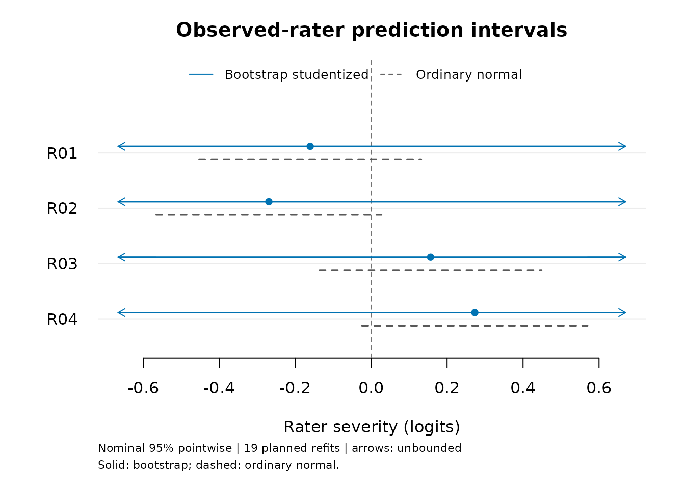
bootstrap_intervals$trials[
!bootstrap_intervals$trials$FitReady |
bootstrap_intervals$trials$EstimatedBoundary, ]
#> Seed FitReady EstimatedBoundary RaterSD PersonSD
#> 12 1457296021 TRUE TRUE 0.0000000 0.9208276
#> 13 1325607976 FALSE FALSE 0.1441794 1.2522326
#> EstimatedPersonVarianceBoundary MaxGradient OptimizerCode NumericalReady
#> 12 FALSE 7.323867e-05 0 TRUE
#> 13 FALSE 5.215741e-05 0 FALSE
#> InformationPositive PersonQuadratureStable QuadraturePoints CheckPoints
#> 12 TRUE TRUE 121 243
#> 13 TRUE FALSE 121 243
#> LogLikDifference GradientDifference EstimatedVarianceBoundary
#> 12 1.150966e-09 4.168424e-08 TRUE
#> 13 5.624900e-06 1.177880e-04 FALSE
#> PersonVarianceUpperBoundary Error
#> 12 FALSE
#> 13 FALSE
#> Warnings
#> 12
#> 13 Numerical or information checks require review; regular intervals are unavailable. Inspect $checks. Person quadrature is not stable. Refit with a larger `quad_points` (up to 241) and recheck $checks.
#> Replicate
#> 12 12
#> 13 13Arrows denote unbounded endpoints, not finite limits at the edge of the plot. Grey ordinary intervals remain a comparison and do not replace them. Even a bounded bootstrap interval is not automatically well calibrated. The finite/unbounded distinction matters when reporting coverage: an interval spanning all real numbers always covers but provides no localization. With only 19 planned refits, even one unresolved replicate makes both 95% endpoints unbounded under this rule. More refits improve tail resolution, but do not remove a genuine tendency to estimate zero variance. Inspect the trial table instead of treating an unbounded result as a plotting error or discarding the boundary replicate.
This procedure assesses coverage over repeated persons, rater effects and scores under the fitted model. It does not promise conditional coverage at every fixed true rater severity. It requires a positive source SD and positive prediction SEs. Retain an estimated zero-variance diagnosis. The separate rater-SD profile can describe population variation at a rater boundary, but is unavailable at an estimated ability-variance boundary. It does not provide familywise control, rater contrasts or a justification for excluding raters. Omitted scores stay omitted, so uncertainty about the missingness mechanism is not represented. Save the bootstrap object to reuse its roots and plots without RTMB or repeated fitting.
What the bootstrap comparison shows
A separate comparison used 24 new datasets, 12 per rater-count condition, under the same 240-person, 1,440-rating normal-population design above, with true rater SD 0.7. Ability SD was fixed as known at one in generation, source fitting and refits; this is not evidence for estimated ability SD. Each source had 99 planned bootstrap refits. Both intervals were evaluated on the same dataset and realized effects; the earlier 40-dataset results were not reused as the ordinary-interval comparator.
| Raters | Interval | Coverage | Mean width (logits) | Finite intervals |
|---|---|---|---|---|
| 6 | Ordinary normal | 91.7% | 1.177 | 72/72 |
| 6 | Studentized bootstrap | 100.0% | 1.648 | 72/72 |
| 6 | Unscaled-error bootstrap | 90.3% | 1.227 | 72/72 |
| 24 | Ordinary normal | 95.5% | 1.122 | 288/288 |
| 24 | Studentized bootstrap | 95.1% | 1.149 | 288/288 |
| 24 | Unscaled-error bootstrap | 93.8% | 1.122 | 288/288 |
All 24 source fits and 2,376 refits passed numerical/information checks. Two refits estimated zero variance; their unresolved studentized errors were retained. No interval was unbounded in this comparison. Thus the six-rater increase was not obtained by counting infinite intervals as successes, but the mean interval was 40% wider. Its improvement occurred in just one of the 12 datasets. The paired coverage change was +8.3 percentage points with MCSE 8.3 points; for 24 raters it was -0.35 points with MCSE 1.08 points. MCSEs use datasets, not individual raters, as independent replications.
This is a small method comparison, not coverage qualification. The six-rater bootstrap covered every target in every dataset, so its empirical coverage variance is zero; that is not evidence of zero Monte Carlo uncertainty or guaranteed coverage. Twelve datasets and 99 refits (2.475 expected draws per 95% tail) are too few for a precise accuracy assessment. The unscaled comparison did not improve coverage here, and 24 raters showed no clear studentized improvement. Keep the bootstrap as an explicit comparison rather than an automatic correction or a replacement for ordinary output. Nonnormal populations, informative assignment and missingness remain unqualified.
Score Persons without treating raters as known
For people already in random_fit,
score_mfrm_persons(random_fit) is the common scoring entry
shared with supported ordinary and testlet RSMs. It uses the full source
rating table. The model-specific score_mfrm_random_rater()
below also allows a different complete scoring table. Both estimate
abilities from responses. predict() answers a different
question: response probabilities at ability values you supply.
# Keep the complete source roster; request only these output rows.
selected_persons <- as.character(unique(ratings$Person)[1:2])
person_scores <- score_mfrm_random_rater(random_fit, persons = selected_persons)
person_scores$table
#> Person Observed Raters Estimate ConditionalSD Lower Upper
#> 1 P001 16 4 0.5958331 0.3131346 -0.01012548 1.218317
#> 2 P002 16 4 1.4094431 0.3543710 0.73648730 2.126691
#> Status IntegrationDifference InterpolationDifference Reason
#> 1 available_conditional 4.136837e-09 9.924554e-08
#> 2 available_conditional 4.415369e-09 3.025057e-09
summary(person_scores)$data_usage
#> Input Observed Omitted RosterPersons
#> 768 768 0 48
#> RequestedPersons
#> 2The calculation holds fitted calibration, including both population
variances, fixed. It integrates other Persons’ abilities and the jointly
uncertain shared raters, using a conditional Laplace approximation for
the raters. It normalizes a continuous marginal ability density to
obtain EAP, posterior SD and equal-tail intervals. This is not scoring
after substituting rater modes as known values, and the rater effects
are not integrated independently for each Person. The reported
IntegrationDifference and
InterpolationDifference assess quadrature and interpolation
convergence. Small values do not bound the separate rater Laplace error
or guarantee repeated-calibration coverage. Computation increases with
the full roster and the number of requested scores. Start with a few
Person IDs when checking a large roster: the default
persons = NULL computes every posterior and can be slow.
Selecting output Persons keeps all of their peers’ responses in the
calculation.
plot(person_scores)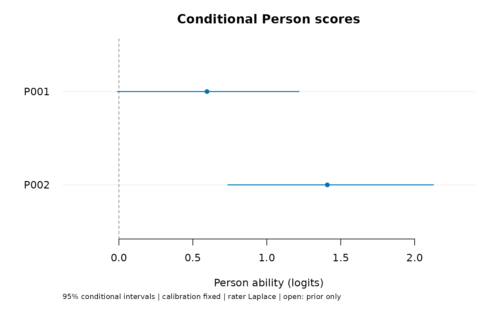
Filled points are response-based scores; open points, when present,
indicate prior-only results. An unavailable row remains labeled without
a point or interval. Use
plot_data(plot(person_scores, draw = FALSE)) or
as_ggplot(plot(person_scores, draw = FALSE)) to reuse the
same saved values. These intervals are conditional on calibration and
use a rater approximation; they are not tests of Person differences or
automatic performance classifications.
If you supply newdata, supply the complete joint
scoring roster. It replaces the source responses and is not
appended to them. Include every response intended to inform the shared
raters, and use persons to choose which scores to return.
New Person and rater IDs are allowed under the same normal populations;
fixed-facet levels must be known. To update existing responses, replace
them explicitly and include each intended rating event once. Restricting
the roster to two Persons generally differs from requesting two outputs
while retaining everybody’s responses.
Missing assigned scores require missing = "omit". An
entirely unobserved Person then retains a prior_only row
with the population distribution, not a measured average ability. Zero
fitted ability variance or failed numerical checks produce unavailable
scores with a reason. No score is imputed.
How close are these scores to the joint posterior?
A numerical comparison held calibration fixed and used independent joint posterior sampling as a reference. It covered three-category RSMs with six or 24 raters, rotating pairs or two weakly linked panels. Eight rosters had 240 Persons and 1,440 responses; four reduced scoring rosters had 48 Persons and 96 responses, with the original calibration retained. These reduced rosters had fewer collected ratings; no missing scores were imputed. Four Persons per roster were selected, including panel links and low/high observed totals. These 48 scores are selected numerical cases, not independent replications for estimating coverage.
| Quantity | Numerical tolerance | Result in the selected cases |
|---|---|---|
| EAP | 0.05 logits | All 48 met the criterion with Monte Carlo uncertainty included. |
| Posterior SD | 0.05 logits | All 48 met the criterion with Monte Carlo uncertainty included. |
| Lower and upper endpoints | 0.10 logits | All 96 met the conditional-CDF bracketing criterion. |
The largest differences from the sampled reference were 0.013 logits for EAP and 0.015 logits for posterior SD. A raw sample-quantile comparison left 24 endpoints unresolved because of reference precision or its uncertainty allowance. To assess those endpoints more precisely, the same saved joint rater samples were used to integrate each Person’s conditional ability distribution. Its averaged CDF bracketed the target quantile within 0.10 logits of each reported endpoint, allowing for Monte Carlo and numerical error. This reference refinement used all 48 selected Persons and changed neither the mfrmr scores nor the sampled posterior. The original quantile results remain recorded.
The tolerances are numerical comparison criteria, not assessment cutoffs or universal error bounds. These results support the tested conditional scoring calculations. They do not establish 95% repeated-sampling coverage with estimated calibration, accuracy for every sparse design, the calibration likelihood approximation, or significance of Person differences. The normal population and assignment assumptions still need substantive justification.
Distinguish an observed rater from a replacement rater
Specify abilities in logits on the fitted scale (mean zero, Rasch slope one). An ability of one is one logit, not one population SD. This API does not estimate abilities from new response data.
observed <- data.frame(
Rater = "R01", Criterion = "Content", Ability = c(-1, 0, 1)
)
p_observed <- predict(random_fit, observed, ability = "Ability", rater = "observed")
replacement <- transform(observed, Rater = "New rater")
p_new <- predict(random_fit, replacement, ability = "Ability", rater = "new")
p_observed$expected_scores
#> Row Rater Ability ExpectedScore
#> 1 1 R01 -1 2.194312
#> 2 2 R01 0 2.880652
#> 3 3 R01 1 3.430402
p_new$expected_scores
#> Row Rater Ability ExpectedScore
#> 1 1 New rater -1 2.090789
#> 2 2 New rater 0 2.771726
#> 3 3 New rater 1 3.351627
p_new$probabilities
#> 1 2 3 4
#> [1,] 0.254912786 0.4426217 0.2592293 0.04323621
#> [2,] 0.064789987 0.2932003 0.4475039 0.19450584
#> [3,] 0.008748215 0.1036857 0.4147571 0.47280894Observed-rater probabilities average over that rater’s approximate conditional distribution. Replacement-rater probabilities average over the estimated population distribution. Simply setting severity to zero generally gives a different answer. Both calculations hold calibration and the supplied ability fixed; they do not propagate uncertainty about those quantities.
The returned rows are marginal probabilities for individual ratings. Rows with the same new rater ID share one latent severity in the model. Multiplying their marginal probabilities would discard that dependence. This method does not return a joint predictive distribution, an interval for an average rating, a scored person ability or a response imputation.
Keep assignment and missing scores explicit
Use one row per assigned rating. Unassigned combinations remain
absent. A missing assigned score is refused by default.
missing = "omit" explicitly analyzes only observed scores
and stores the omitted row numbers; it does not justify ignorability or
fill missing values. The current route requires a connected Person-rater
graph, multiple persons per rater, full-rank fixed facets and every
declared category observed. Connectedness is necessary for this route
but does not establish adequate information about rater variation.
The current scope does not include PCM, anchors, informative assignment, testlet dependence, multidimensional abilities or nonnormal rater populations. The assigned-score MI pooling workflow and portable fixed calibration workflow have different model contracts and cannot silently accept these fits.
Inspect posterior predictive residuals
For response-level residuals, uncertainty about ability and
all shared raters must be integrated jointly.
Substituting a rater mode or using the supplied-ability
predict() results above would answer a different question.
mfrm_response_diagnostics() holds calibration fixed and
obtains each category’s probability from a joint integral with a
hypothetical replicate sharing the original Person and rater. It then
calculates the predictive mean and full mixture variance.
This calculation can be expensive. The example selects all assigned
ratings for one Person for display; every observed rating in the
original fit still informs the shared-rater posterior. The resulting
rater summaries describe only those selected rows, not
the raters’ full workloads. Omit rows to summarize all
assigned ratings.
selected_rows <- which(ratings$Person == ratings$Person[1])
response_review <- mfrm_response_diagnostics(random_fit,
rows = selected_rows, group_by = "Rater")
response_review$measures
#> Facet Level Selected Observed Missing Available Infit Outfit
#> 1 Rater R01 4 4 0 4 0.9463017 0.9049058
#> 2 Rater R02 4 4 0 4 1.0865901 1.1833373
#> 3 Rater R03 4 4 0 4 0.9620854 0.9785777
#> 4 Rater R04 4 4 0 4 1.0789374 1.0456354
#> Status Reason
#> 1 descriptive_only
#> 2 descriptive_only
#> 3 descriptive_only
#> 4 descriptive_only
plot(response_review, style = "paired")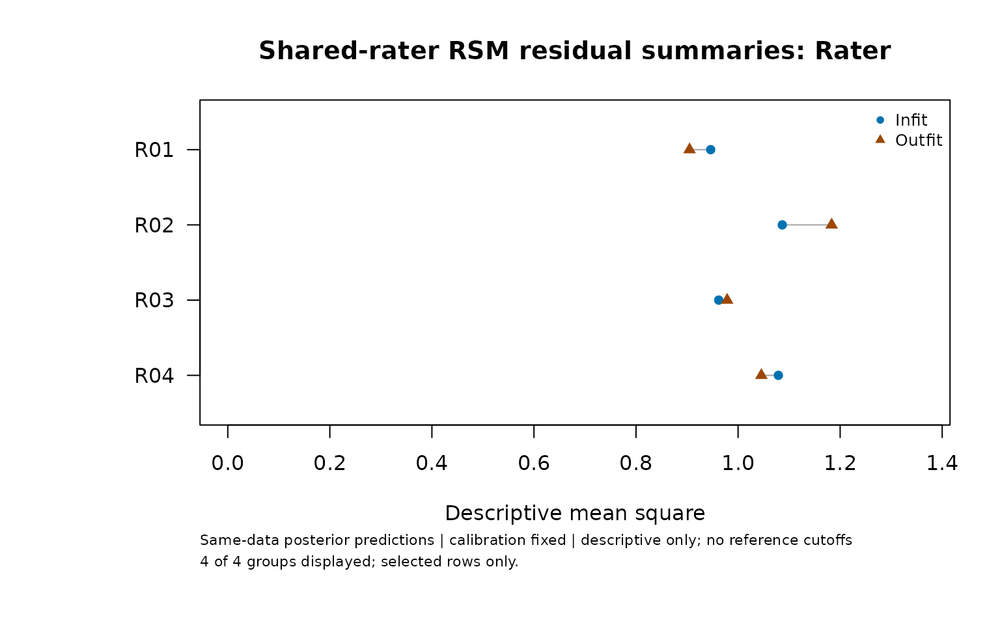
The category-specific Laplace numerator integrals are normalized to
obtain a probability distribution.
response_review$rows$NormalizationError retains the
unnormalized sum minus one. The approximation reoptimizes the joint
rater mode for each category; fixed calibration is never refitted.
Agreement between quadrature orders and a small normalization defect do
not prove Laplace accuracy, particularly with few
raters or sparse data. See
help("mfrm_response_diagnostics") for the equations and
reference.
These same-data residual summaries have no established expectation of
one, ZSTD, p-values or reference cutoffs. They cannot be compared
directly with ordinary plug-in Infit/Outfit and do not classify rater
quality. Missing scores, zero/nonfinite predictive variances and
unresolved integration remain explicit; a group with an unresolved
observed row has no summary. style = "scatter" offers a
second view; palette = "mono" retains distinct symbols in
the paired view. Custom or hidden titles, notes and labels are
supported, as are as_ggplot() and plot_data()
without recomputation.
Compare predictions on the same definition
Does accounting for shared rater uncertainty change expected scores
and residual summaries? Calculate the ordinary RSM’s posterior
predictive quantities, then compare them with the saved extension
results. Both models use the same observed ratings and selected events.
The ordinary plug-in indices returned by diagnose_mfrm()
have a different definition and cannot replace this step.
ordinary_response_review <- mfrm_response_diagnostics(ordinary_fit,
rows = selected_rows, group_by = "Rater")
model_comparison <- compare_mfrm(ordinary_fit, random_fit,
labels = c("Ordinary RSM", "Shared-rater RSM"),
response_diagnostics = list(ordinary_response_review, response_review))
model_comparison$responses$measures
#> Facet Level Selected Observed Missing ReferenceAvailable ComparisonAvailable
#> 1 Rater R01 4 4 0 4 4
#> 2 Rater R02 4 4 0 4 4
#> 3 Rater R03 4 4 0 4 4
#> 4 Rater R04 4 4 0 4 4
#> Status Reason InfitReference InfitComparison InfitDifference
#> 1 available_descriptive 0.9354877 0.9463017 0.01081407
#> 2 available_descriptive 1.1475773 1.0865901 -0.06098715
#> 3 available_descriptive 0.9904410 0.9620854 -0.02835561
#> 4 available_descriptive 1.0468595 1.0789374 0.03207788
#> OutfitReference OutfitComparison OutfitDifference
#> 1 0.894340 0.9049058 0.01056580
#> 2 1.252612 1.1833373 -0.06927516
#> 3 1.006529 0.9785777 -0.02795104
#> 4 1.017346 1.0456354 0.02828979
plot(model_comparison, metric = "infit", style = "difference")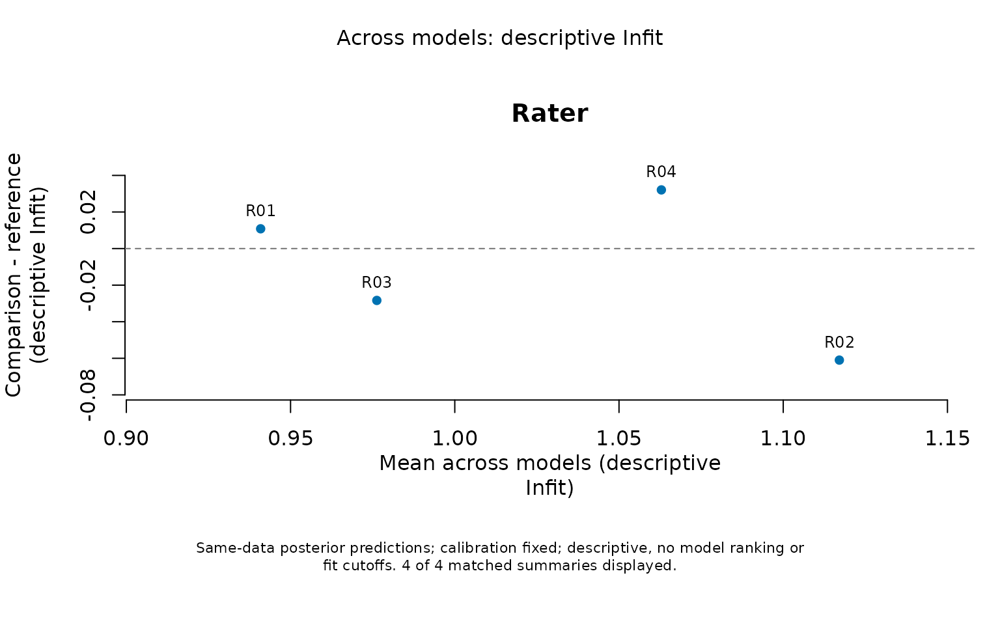
These differences are descriptive and hold each model’s calibration fixed. The zero line means the summaries agree. A smaller Infit does not show that the model is better or the rater is more accurate: these predictions reuse the observations being checked, and their mean squares have no established reference value of one. The selected Person’s ratings alone contribute to these group summaries, while all observed Persons inform the shared-rater posterior.
as_ggplot(model_comparison, metric = "probability", show_labels = FALSE,
palette = "mono", show_title = FALSE, show_notes = FALSE)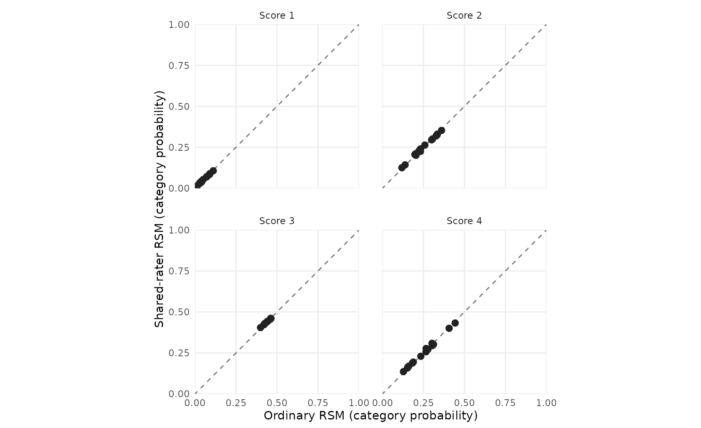
Use metric = "expected_score", "variance"
or "outfit" to change the quantity, and
category = 4 with metric = "probability" to
focus on one score. Expected scores remain on the original scale;
variances are in squared score units. responses$rows
retains both original row numbers and responses$events
identifies each matched rating. Repeated events retain their
multiplicity. If one prediction is unavailable, its difference remains
missing with a reason. Group summaries never silently discard an
unresolved observed row. Row numbers can differ between fits; matching
uses event contents.
The report below saves these comparisons and supports
plot(res, type = "response_comparison", metric = "infit").
To collect the ordinary model’s summaries separately without running its
plug-in diagnostics, use
mfrm_results(ordinary_fit, response_diagnostics = ordinary_response_review, compute = "never").
Plotting, collecting and exporting saved comparisons performs no new
integration.
Compare Person scores and inspect model-aware maps
How do individual scores change when the model accounts for shared raters? Use conditional scores computed from the same complete source roster. Selecting returned Persons does not remove the other observed responses. The ordinary model’s scoring retains its fitted normal mean and variance.
source_scores <- person_scores # Already scored from the complete roster
ordinary_person_scores <- score_mfrm_persons(ordinary_fit,
persons = source_scores$table$Person)
model_comparison <- compare_mfrm(ordinary_fit, random_fit,
response_diagnostics = list(ordinary_response_review, response_review),
person_scores = list(ordinary_person_scores, source_scores))
model_comparison$persons$table
#> Person Observed SourceReference SourceComparison OriginReference
#> 1 P001 16 0.5953652 0.5958331 -0.003130374
#> 2 P002 16 1.4117595 1.4094431 -0.003130374
#> OriginComparison Reference Comparison ConditionalSDReference
#> 1 0 0.5984956 0.5958331 0.3014066
#> 2 0 1.4148899 1.4094431 0.3446533
#> ConditionalSDComparison LowerReference UpperReference LowerComparison
#> 1 0.3131346 0.01633153 1.198926 -0.01012548
#> 2 0.3543710 0.76279224 2.114890 0.73648730
#> UpperComparison ReferenceStatus ComparisonStatus
#> 1 1.218317 available_conditional available_conditional
#> 2 2.126691 available_conditional available_conditional
#> Status Reason Difference
#> 1 available_descriptive -0.002662543
#> 2 available_descriptive -0.005446802
plot(model_comparison, metric = "person", style = "difference", show_labels = TRUE)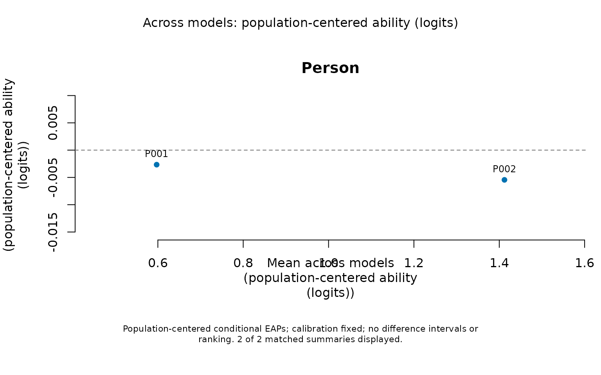
The comparison subtracts each model’s fitted population mean to remove its arbitrary origin; it preserves the Rasch logit unit. It retains raw scores, origins, posterior SDs and conditional endpoints. Shrinkage and population variance can still differ. Separate score intervals do not constitute an interval for their difference, a ranking of models or a test between Persons. Prior-only and unavailable differences remain withheld.
map_results <- mfrm_results(random_fit, scores = source_scores,
response_diagnostics = response_review, comparison = model_comparison)
plot(map_results, type = "wright", show_labels = TRUE)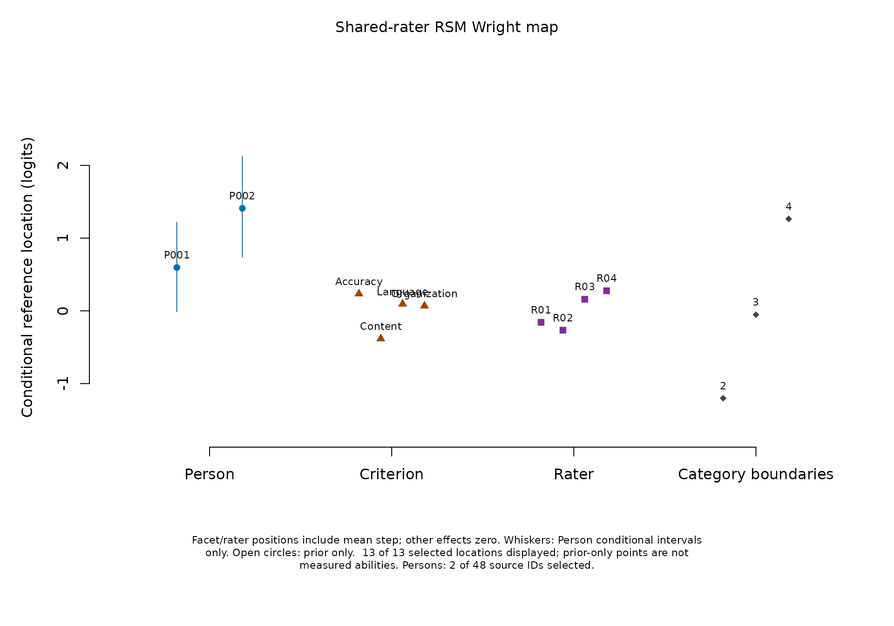
The Person column shows the selected source EAPs. Facet positions equal the severity coefficient plus the mean step location: the average adjacent category boundary when other effects are zero. The category column shows each step at that zero reference. The rater column uses observed-rater conditional modes. It does not show replacement-rater marginal predictions. These positions are conditional references, not posterior-averaged category crossings. A higher reference location means more ability is needed to cross the corresponding boundary. Adding several plotted facet locations together would count the mean step more than once; use the model equation for a specific rating profile.
Whiskers show only Person intervals conditional on calibration. Translating an ordinary facet interval by the step mean would omit the covariance and uncertainty of that mean, so no such composite interval is drawn. The separate calibration/rater plots retain their original uncertainty targets.
as_ggplot(plot(map_results, type = "fit_pathway", facet = "Rater",
palette = "mono", show_title = FALSE, draw = FALSE))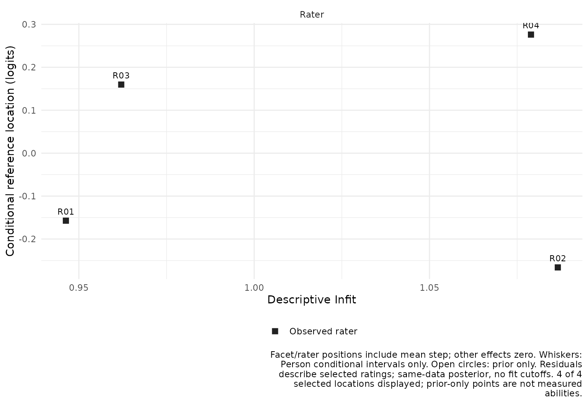
This pathway connects position with the previously defined
descriptive posterior residual index. Here they
describe only the selected Person’s ratings, although all 768 observed
source ratings inform the shared-rater posterior. Use
fit_stat = "Outfit" to change the horizontal index. A large
or small value is a prompt to inspect the selected data, not a
rater-quality classification. No ordinary fit cutoff, ZSTD or automatic
exclusion is supplied.
Use facet, persons,
show_steps, show_intervals and
show_labels to select the display.
show_title = FALSE and show_notes = FALSE hide
annotations while retaining their meaning in plot_data().
Shapes accompany colour; palette = "mono" supports
grayscale output. Tables retain unavailable rows and
original/transformed coordinates. Older saved testlet scores lacking a
complete scoring_data roster must be regenerated from the
saved fit before these maps or score comparisons; no refit is needed.
See ?mfrmr_model_maps.
Save the complete analysis
Use the common reporting route to keep calibration, observed-rater estimates, numerical checks and interval meanings together. Attach existing predictions and bootstrap intervals explicitly; reporting does not run them automatically.
res <- mfrm_results(random_fit, predictions = p_new, scores = person_scores,
intervals = bootstrap_intervals, comparison = model_comparison,
diagnostics = response_review)
res$tables$interval_basis
#> Target
#> 1 Fixed-facet and step calibration
#> 2 Variance component
#> 3 Observed-rater severity
#> 4 Person ability
#> 5 Observed-rater severity (bootstrap)
#> Interval
#> 1 No automatic calibration interval
#> 2 No regular variance interval supplied
#> 3 No automatic individual-rater interval
#> 4 95% conditional equal-tail posterior intervals
#> 5 95% pointwise studentized prediction intervals
#> Limitation
#> 1 SEs use observed information. Explicit normal bounds require resolved numerical/information checks and interior estimated variances; nominal coverage is not established. Missing endpoints remain unavailable.
#> 2 An estimated zero variance is a boundary, not proof that dependence is absent.
#> 3 PredictionSE is a first-order approximation; nominal coverage unresolved. Explicit normal or saved bootstrap calculations require their own interpretation.
#> 4 Calibration held fixed; prior_only is prior information; unavailable rows retain their reason.
#> 5 Model-based bootstrap; unresolved refits and infinite endpoints are retained; no general coverage guarantee.
res$tables$person_scores
#> Person Observed Raters Estimate ConditionalSD Lower Upper
#> 1 P001 16 4 0.5958331 0.3131346 -0.01012548 1.218317
#> 2 P002 16 4 1.4094431 0.3543710 0.73648730 2.126691
#> Status IntegrationDifference InterpolationDifference Reason
#> 1 available_conditional 4.136837e-09 9.924554e-08
#> 2 available_conditional 4.415369e-09 3.025057e-09
res$tables$bootstrap_availability
#> Rater Planned Known Unresolved Finite
#> R01 R01 19 17 2 FALSE
#> R02 R02 19 17 2 FALSE
#> R03 R03 19 17 2 FALSE
#> R04 R04 19 17 2 FALSE
res$tables$comparison_effects
#> Facet Level SourceReference SourceComparison CenterReference
#> 1 Criterion Accuracy 0.23250785 0.23147658 0.000000e+00
#> 2 Criterion Content -0.38809689 -0.38637724 0.000000e+00
#> 3 Criterion Language 0.09102647 0.09062342 0.000000e+00
#> 4 Criterion Organization 0.06456257 0.06427724 0.000000e+00
#> 5 Rater R01 -0.18292092 -0.16038370 6.938894e-18
#> 6 Rater R02 -0.30735556 -0.26922414 6.938894e-18
#> 7 Rater R03 0.17863651 0.15662192 6.938894e-18
#> 8 Rater R04 0.31163997 0.27301987 6.938894e-18
#> CenterComparison Reference Comparison Mean Difference
#> 1 1.387779e-17 0.23250785 0.23147658 0.23199221 -0.0010312678
#> 2 1.387779e-17 -0.38809689 -0.38637724 -0.38723706 0.0017196487
#> 3 1.387779e-17 0.09102647 0.09062342 0.09082494 -0.0004030507
#> 4 1.387779e-17 0.06456257 0.06427724 0.06441991 -0.0002853303
#> 5 8.491322e-06 -0.18292092 -0.16039219 -0.17165655 0.0225287294
#> 6 8.491322e-06 -0.30735556 -0.26923263 -0.28829409 0.0381229291
#> 7 8.491322e-06 0.17863651 0.15661343 0.16762497 -0.0220230734
#> 8 8.491322e-06 0.31163997 0.27301138 0.29232568 -0.0386285852
#> ReferenceKind ComparisonKind Status Reason
#> 1 Fixed facet estimate Fixed facet estimate available_descriptive
#> 2 Fixed facet estimate Fixed facet estimate available_descriptive
#> 3 Fixed facet estimate Fixed facet estimate available_descriptive
#> 4 Fixed facet estimate Fixed facet estimate available_descriptive
#> 5 Fixed facet estimate Conditional rater mode available_descriptive
#> 6 Fixed facet estimate Conditional rater mode available_descriptive
#> 7 Fixed facet estimate Conditional rater mode available_descriptive
#> 8 Fixed facet estimate Conditional rater mode available_descriptive
report <- mfrm_report(res)
summary(report, view = "reader")
#> mfrmr Report Summary
#>
#> Overview
#> Style OverallStatus
#> qc caveat
#> FirstAction ReviewAreas
#> Review numerical checks, interval meanings and the rating design. 0
#> NotComputedAreas CaveatAreas OptionalAreas UnavailableAreas OkAreas
#> 0 2 0 0 1
#> SourceInclude
#> fit, diagnostics, tables, precision, reporting, categories, plots
#>
#> Decision
#> - Interpretation: Numerical checks satisfied; model adequacy not assessed
#> - Formal inference: Target-specific limits; no general clearance
#> - Why: Numerical checks are not model-fit diagnostics or evidence of rater
#> quality.
#> - Next: Review numerical checks, interval meanings and the rating design.
#>
#> First screen
#> Area Status Readiness
#> Overall caveat Target-specific review
#> Numerical checks ok Numerical only
#> Interval interpretation caveat Conditional on stated assumptions
#> Model-fit diagnostics caveat Descriptive only
#> MainIssue
#> Numerical checks satisfied; model adequacy not assessed
#> Numerical convergence does not establish model adequacy.
#> Read the target and uncertainty basis for each reported quantity.
#> Same-data posterior predictive residuals have no calibrated reference cutoffs or tests.
#> NextAction
#> Review numerical checks, interval meanings and the rating design.
#> Inspect all stored checks and boundary status.
#> Retain interval limitations, unavailable rows and omitted-score counts.
#> Review selected-row summaries and unavailable rows; do not apply ordinary-model cutoffs.
#> PrimaryRoute
#> report$tables$interpretation
#> report$tables$numerical_checks
#> report$tables$interval_basis
#> report$tables$response_measures
#>
#> Claim readiness
#> Readiness Claims ExampleClaim
#> Not established 1 Model adequacy and general interval coverage
#>
#> Immediate actions
#> Area Status
#> Interval interpretation caveat
#> Model-fit diagnostics caveat
#> MainIssue
#> Read the target and uncertainty basis for each reported quantity.
#> Same-data posterior predictive residuals have no calibrated reference cutoffs or tests.
#> NextAction
#> Retain interval limitations, unavailable rows and omitted-score counts.
#> Review selected-row summaries and unavailable rows; do not apply ordinary-model cutoffs.
#> PrimaryRoute
#> report$tables$interval_basis
#> report$tables$response_measures
archive_dir <- tempfile("random-rater-report-")
archive <- export_mfrm_results(res, archive_dir, preset = "starter",
acknowledge_sensitive = TRUE) # Synthetic example; real exports retain IDs
stopifnot(nrow(archive$plot_errors) == 0)
restored_results <- readRDS(file.path(archive_dir, "mfrmr_results_results.rds"))
stopifnot(identical(restored_results$tables$bootstrap_trials,
bootstrap_intervals$trials))The archive’s index.html links to the report and
available severity plots. Bootstrap limits that extend to infinity stay
infinite in the tables and are shown with arrows in the plot. Failed or
unresolved refits remain in the trial table. The replay script reloads
the RDS; run it from the archive folder. Numerical convergence is not
evidence of model adequacy or interval coverage. Ordinary residual
diagnostics and the Shiny viewer are unavailable. The model-aware Wright
and fit-pathway routes above have their own conditional interpretation.
Older predictions without matching source metadata must be regenerated
from their saved fit before attachment; neither refitting nor a new
bootstrap is needed. The separately calculated population-SD profile
below remains in the complete saved analysis; it is not the
observed-rater intervals argument.
path <- tempfile(fileext = ".rds")
saveRDS(list(ratings = ratings, fit = random_fit, population_interval = sd_interval,
person_scores = person_scores, rater_intervals = bootstrap_intervals,
observed = p_observed, replacement = p_new), path)
saved <- readRDS(path)
stopifnot(identical(predict(saved$fit, replacement, "Ability", rater = "new"), p_new))
plot_data(plot(saved$fit, draw = FALSE))$table
#> Rater Persons Estimate ConditionalSD PredictionSE Lower Upper
#> 1 R01 48 -0.1603837 0.1228652 0.1492869 NA NA
#> 2 R02 48 -0.2692241 0.1230289 0.1514162 NA NA
#> 3 R03 48 0.1566219 0.1228255 0.1492175 NA NA
#> 4 R04 48 0.2730199 0.1229747 0.1514766 NA NARetain the model, source data, checks, prediction inputs and separately computed profile interval together. Earlier fixed-rater fits must be refitted for this model; changing their class or plotting method does not turn them into random-rater analyses.
Compare with a fixed-rater analysis
Keep the same observed events, categories, criterion effects and ability population. Examine how rater contrasts and predictions at common ability values change. A fixed-rater fit centers the observed panel, whereas the random-rater fit refers to its assumed population; raw severity estimates can therefore have different origins. Shrinkage toward zero is not itself evidence that the random model is more accurate.
Setting rater_sd = 0 removes all rater differences. It
does not recover a model with freely estimated fixed rater effects.
After integrating shared raters, persons remain dependent through those
raters, so the ordinary Person-count BIC and chi-squared
likelihood-ratio rules cannot be transferred automatically.
compare_mfrm() checks matched events and compares centered
facet effects from one ordinary and one extended fit. Its paired and
difference views describe changed fitted effects; they do not rank
models or compare predictive accuracy. For predictive evaluation, first
decide whether the target is another person, an existing rater or a new
rater; arbitrary splits of individual rating rows can retain shared
effects across training and evaluation.